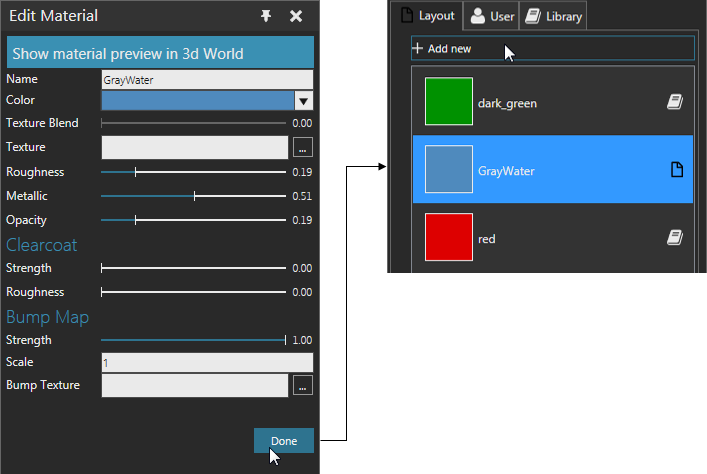

Adding New Materials
You can add a new material and assign it to objects in the current layout of the 3D world or save the material in your user library.
- On the Modeling tab, in the Geometry group, click the Tools arrow, and then under Material, click Assign.
- In the Assign material task pane, expand Materials, and then do one of the following:
- To add a new layout material, click the Layout tab, and then click Add new.
- To add a new user material, click the User tab, and then click Add new.
- In the Edit Material task pane, define the properties of the material, and then click Done.
Example. Add a new layout material
